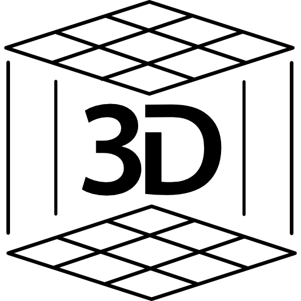

3D Object Reconstruction

Building a 3D model from a series of scanned objected through camera calibration, 3D coordinate triangulation, Poission Surface construction using Python numpy, scipy, and Jupyter notebook